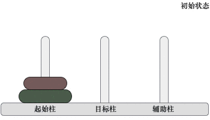

汉诺塔问题（分治+源码+动画演示）
汉诺塔问题源自印度一个古老的传说，印度教的“创造之神”梵天创造世界时做了 3 根金刚石柱，其中的一根柱子上按照从小到大的顺序摞着 64 个黄金圆盘。梵天命令一个叫婆罗门的门徒将所有的圆盘移动到另一个柱子上，移动过程中必须遵守以下规则：
图 1 给您展示了包含 3 个圆盘的汉诺塔问题：
一根柱子上摞着 3 个不同大小的圆盘，那么在不违反规则的前提下，如何将它们移动到另一个柱子上呢？图 2 给大家提供了一种实现方案：

图 2 汉诺塔问题的解决方案
1) 当起始柱上只有 1 个圆盘时，我们可以很轻易地将它移动到目标柱上；
2) 当起始柱上有 2 个圆盘时，移动过程如下图所示：
移动过程是：先将起始柱上的 1 个圆盘移动到辅助柱上，然后将起始柱上遗留的圆盘移动到目标柱上，最后将辅助柱上的圆盘移动到目标柱上。
3) 当起始柱上有 3 个圆盘时，移动过程如图 2 所示，仔细观察会发现，移动过程和 2 个圆盘的情况类似：先将起始柱上的 2 个圆盘移动到辅助柱上，然后将起始柱上遗留的圆盘移动到目标柱上，最后将辅助柱上的圆盘移动到目标柱上。
通过分析以上 3 种情况的移动思路，可以总结出一个规律：对于 n 个圆盘的汉诺塔问题，移动圆盘的过程是：
由此，n 个圆盘的汉诺塔问题就简化成了 n-1 个圆盘的汉诺塔问题。按照同样的思路，n-1 个圆盘的汉诺塔问题还可以继续简化，直至简化为移动 3 个甚至更少圆盘的汉诺塔问题。
如下为分治算法解决汉诺塔问题的伪代码：
如下是解决汉诺塔问题的 C 语言程序：
如下是解决汉诺塔问题的 Java 程序：
如下是解决汉诺塔问题的 Python 程序：
以上程序的执行结果均为：
- 每次只能移动柱子最顶端的一个圆盘；
- 每个柱子上，小圆盘永远要位于大圆盘之上；
图 1 给您展示了包含 3 个圆盘的汉诺塔问题：

图 1 汉诺塔问题
一根柱子上摞着 3 个不同大小的圆盘，那么在不违反规则的前提下，如何将它们移动到另一个柱子上呢？图 2 给大家提供了一种实现方案：
图 2 汉诺塔问题的解决方案
在汉诺塔问题中，当圆盘个数不大于 3 时，多数人都可以轻松想到移动方案，随着圆盘数量的增多，汉诺塔问题会越来越难。也就是说，圆盘的个数直接决定了汉诺塔问题的难度，解决这样的问题可以尝试用分治算法，将移动多个圆盘的问题分解成多个移动少量圆盘的小问题，这些小问题很容易解决，从而可以找到整个问题的解决方案。汉诺塔问题中，3 个圆盘至少需要移动 7 次，移动 n 的圆盘至少需要操作 2n-1 次。
分治算法解决汉诺塔问题
为了方便讲解，我们将 3 个柱子分别命名为起始柱、目标柱和辅助柱。实际上，解决汉诺塔问题是有规律可循的：1) 当起始柱上只有 1 个圆盘时，我们可以很轻易地将它移动到目标柱上；
2) 当起始柱上有 2 个圆盘时，移动过程如下图所示：

图 3 移动两个圆盘
图 3 移动两个圆盘
移动过程是：先将起始柱上的 1 个圆盘移动到辅助柱上，然后将起始柱上遗留的圆盘移动到目标柱上，最后将辅助柱上的圆盘移动到目标柱上。
3) 当起始柱上有 3 个圆盘时，移动过程如图 2 所示，仔细观察会发现，移动过程和 2 个圆盘的情况类似：先将起始柱上的 2 个圆盘移动到辅助柱上，然后将起始柱上遗留的圆盘移动到目标柱上，最后将辅助柱上的圆盘移动到目标柱上。
通过分析以上 3 种情况的移动思路，可以总结出一个规律：对于 n 个圆盘的汉诺塔问题，移动圆盘的过程是：
- 将起始柱上的 n-1 个圆盘移动到辅助柱上；
- 将起始柱上遗留的 1 个圆盘移动到目标柱上；
- 将辅助柱上的所有圆盘移动到目标柱上。
由此，n 个圆盘的汉诺塔问题就简化成了 n-1 个圆盘的汉诺塔问题。按照同样的思路，n-1 个圆盘的汉诺塔问题还可以继续简化，直至简化为移动 3 个甚至更少圆盘的汉诺塔问题。
如下为分治算法解决汉诺塔问题的伪代码：
// num 表示移动圆盘的数量，source、target、auxiliary 分别表示起始柱、目标柱和辅助柱
hanoi(num , source , target , auxiliary):
if num == 1: // 如果圆盘数量仅有 1 个，则直接从起始柱移动到目标柱
print(从 source 移动到 target)
else:
// 递归调用 hanoi 函数，将 num-1 个圆盘从起始柱移动到辅助柱上，整个过程的实现可以借助目标柱
hanoi(num-1 , source , auxiliary , target)
// 将起始柱上剩余的最后一个大圆盘移动到目标柱上
print(从 source 移动到 target)
// 递归调用 hanoi 函数，将辅助柱上的 num-1 圆盘移动到目标柱上，整个过程的实现可以借助起始柱
hanoi(n-1 , auxiliary , target , source)
汉诺塔问题的代码实现
根据伪代码，我们为大家编写好了相应的 C 语言、Java 以及 Python 程序。如下是解决汉诺塔问题的 C 语言程序：
#include <stdio.h>
void hanoi(int num, char sou, char tar,char aux) {
//统计移动次数
static int i = 1;
//如果圆盘数量仅有 1 个，则直接从起始柱移动到目标柱
if (num == 1) {
printf("第%d次:从 %c 移动至 %c\n", i, sou, tar);
i++;
}
else {
//递归调用 hanoi() 函数，将 num-1 个圆盘从起始柱移动到辅助柱上
hanoi(num - 1, sou, aux, tar);
//将起始柱上剩余的最后一个大圆盘移动到目标柱上
printf("第%d次:从 %c 移动至 %c\n", i, sou, tar);
i++;
//递归调用 hanoi() 函数，将辅助柱上的 num-1 圆盘移动到目标柱上
hanoi(num - 1, aux, tar, sou);
}
}
int main()
{
//以移动 3 个圆盘为例，起始柱、目标柱、辅助柱分别用 A、B、C 表示
hanoi(3, 'A', 'B', 'C');
return 0;
}
如下是解决汉诺塔问题的 Java 程序：
public class Demo {
// 统计移动次数
public static int i = 1;
public static void hanoi(int num, char sou, char tar, char sux) {
// 如果圆盘数量仅有 1 个，则直接从起始柱移动到目标柱
if (num == 1) {
System.out.println("第" + i + "次:从" + sou + "移动到" + tar);
i++;
} else {
// 递归调用 hanoi() 函数，将 num-1 个圆盘从起始柱移动到辅助柱上
hanoi(num - 1, sou, sux, tar);
// 将起始柱上剩余的最后一个大圆盘移动到目标柱上
System.out.println("第" + i + "次:从" + sou + "移动到" + tar);
i++;
// 递归调用 hanoi() 函数，将辅助柱上的 num-1 圆盘移动到目标柱上
hanoi(num - 1, sux, tar, sou);
}
}
public static void main(String[] args) {
// 以移动 3 个圆盘为例，起始柱、目标柱、辅助柱分别用 A、B、C 表示
hanoi(3, 'A', 'B', 'C');
}
}
如下是解决汉诺塔问题的 Python 程序：
#记录移动次数
i = 1
def hanoi(num,sou,tar,aux):
global i
if num==1:
print("第%d次:从 %c 移动至 %c" % (i, sou, tar))
i=i+1
else:
#递归调用 hanoi() 函数，将 num-1 个圆盘从起始柱移动到辅助柱上
hanoi(num - 1, sou, aux, tar)
#将起始柱上剩余的最后一个大圆盘移动到目标柱上
print("第%d次:从 %c 移动至 %c" % (i, sou, tar))
i=i+1
#递归调用 hanoi() 函数，将辅助柱上的 num-1 圆盘移动到目标柱上
hanoi(num - 1, aux, tar, sou)
#以移动 3 个圆盘为例，起始柱、目标柱、辅助柱分别用 A、B、C 表示
hanoi(3, 'A', 'B', 'C');
以上程序的执行结果均为：
第1次:从 A 移动至 B
第2次:从 A 移动至 C
第3次:从 B 移动至 C
第4次:从 A 移动至 B
第5次:从 C 移动至 A
第6次:从 C 移动至 B
第7次:从 A 移动至 B
关注公众号「站长严长生」，在手机上阅读所有教程，随时随地都能学习。本公众号由C语言中文网站长亲自运营，长期更新，坚持原创。

微信扫码关注公众号